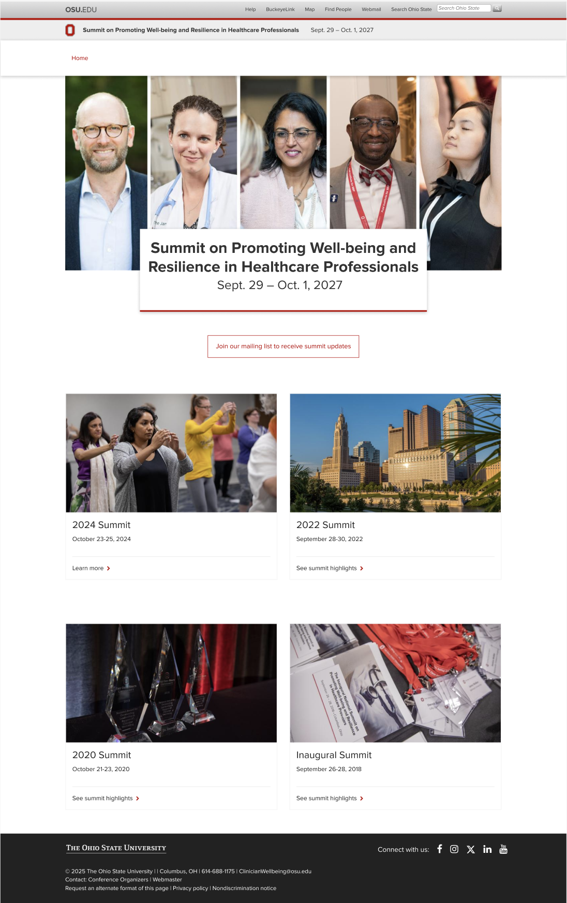
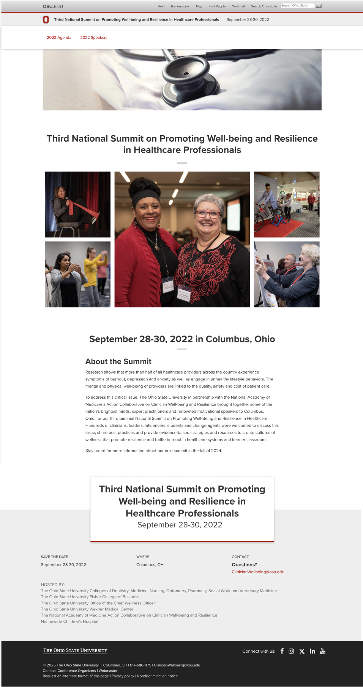
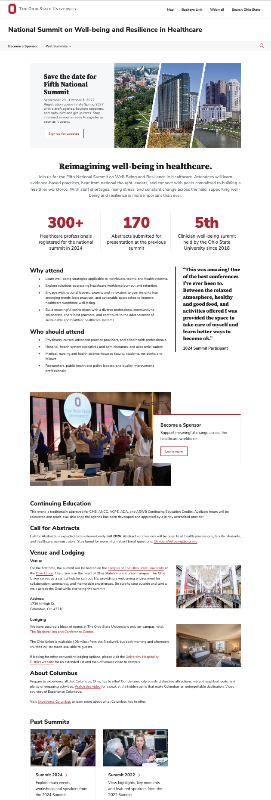

Case study · UX Design
Clinician Well-Being Summit: Bringing an event website in line with The Ohio State University brand
The Clinician Well-Being Summit brings healthcare professionals together to talk about burnout, resilience, and healthier workplaces. Its website needed to look and feel like part of The Ohio State University, and to guide visitors clearly toward the event. It also needed to be easy to maintain in order for the information to be relevant between summits. I restructured the site's content, designed it in Figma using the university's BUX design system, and built it in Drupal, resulting in a site that is consistent with university standards in both structure and visual identity.
- Role
- UX Designer
- Timeline
- 2 months
- Tools
- Figma, Drupal, BUX Design System

The challenge: on brand and easy to maintain
The existing site had grown over time, with content that was hard to scan, unclear priorities, and a look that didn't match the university's current web standards. The client needed a site that was visually aligned with the rest of the university's web presence, and easy for the event organizers to maintain.


Understanding the structure
I began by mapping the existing site and analyzing its information hierarchy. I then proposed a new site map organized around visitor needs, marked which content should stay evergreen year-round, and defined build phases based on the client's priorities and deadlines.
Designing with the BUX design system
The redesign was built around the university's BUX design system, so every page draws on approved components, typography, color, and layout patterns. This gives the site a look and feel consistent with other Ohio State websites and helps meet the university's brand and accessibility expectations.
Within that system, I adapted the client's content for the web by:
- Creating clear calls to action so visitors always know the next step
- Condensing long passages into concise, scannable pages
- Highlighting key numbers from past events to build credibility
- Selecting and placing images that support the content

Building in Drupal
I built the site in Drupal using training materials provided by the university's IT department, translating the approved Figma mockups into a working site that fits the university's platform. I stayed in regular contact with the client throughout the project, from site map review to launch, and provided support so their team could edit the site in Drupal.
Results and reflection
The redesigned site now sits comfortably within the university's web ecosystem: it is visually consistent, aligned with Ohio State's branding and graphics. It provides concise event overview and context without overwhelming the user with information.
Working within the BUX design system showed me how a well-built system speeds up design decisions while raising the quality and consistency of the result. Good constraints can make for a better, more trustworthy experience.